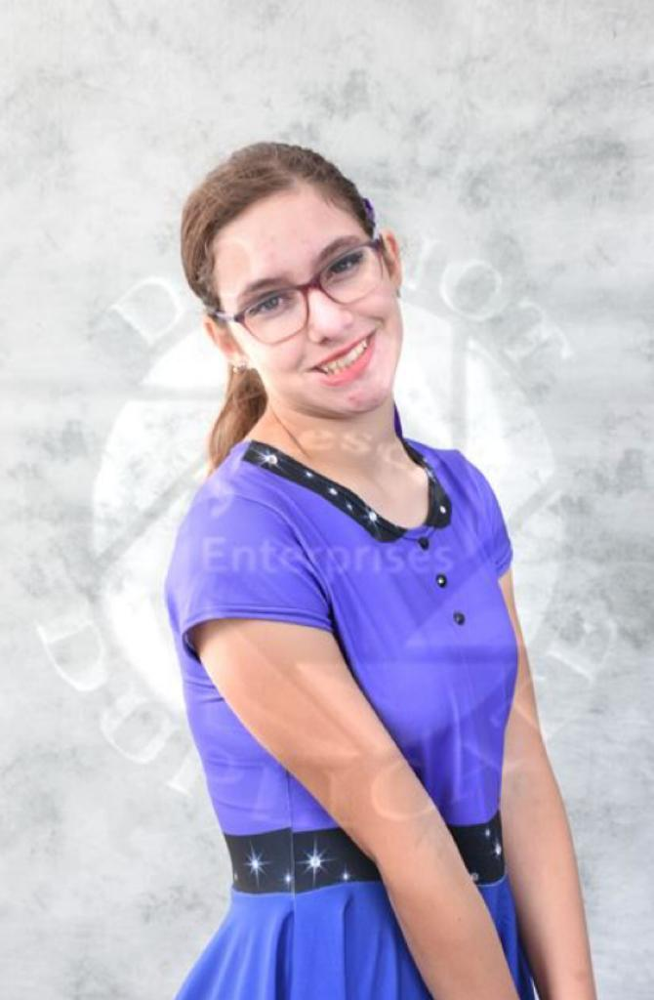
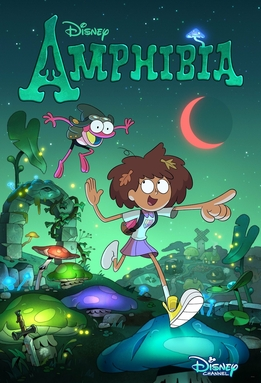
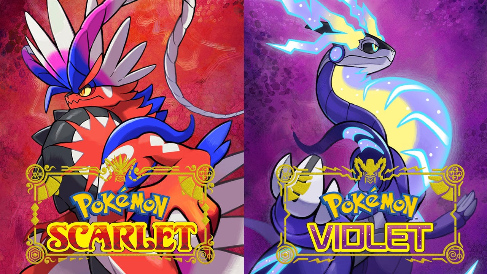
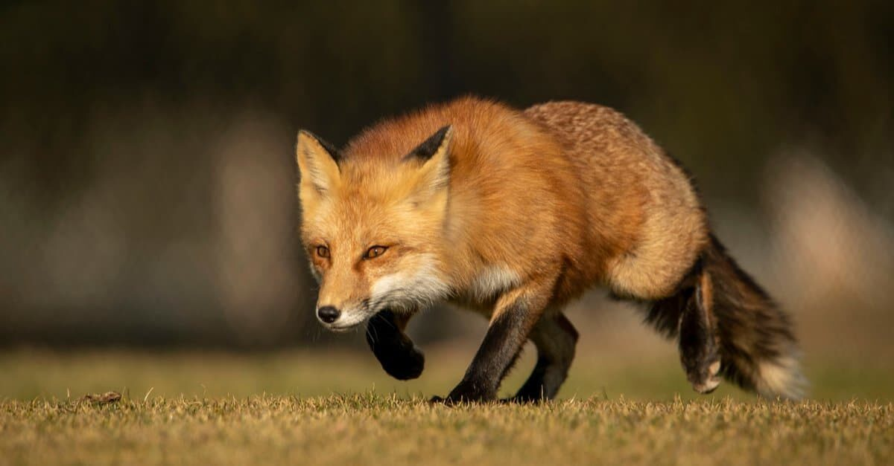
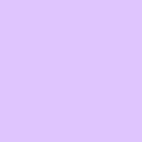

Hello, I'm Nicole, welcome to my webpage.
This webpage is about me I guess, like stuff I like and other things.
About Me?
I have two cats and two dogs, and I have a small cactus plant in my house. I like video games and animated TV shows, which I prefer over live-action shows and movies. My favorite game franchise is Pokemon. I am also an admin on the Piggy Wiki Fandom, however I am not always active. I am also a fan of a youtube animation genre known as "object shows", with my favorites being hfjONE, BFB, and Inanimate Insanity. I also like to draw, such as doodling my characters on my work paper when I'm supposed to be working, and I love reading as well. I'd like to become an animator, and have created plans for several shows(all involving my characters of course).
A picture of me after performing at Bands of America for marching band.
A Favorite Quote:
"In this life, you will meet with both admiration and abuse from others. How others choose to view you is a choice only they can make. You cannot make it for them. All that truly matters is that you hold firm to your own values." - Cyllene from Pokemon Legends: Arceus
Collections I have:
- A total of 24 shiny Pokemon I currently own
- Several pins/buttons from competitions
- 5 army lanyards from when different branches of the army came to my school
- A lot of Beanie Boos
My Top 10 Favorite Pokemon, And Why I Like Them:
- Sylveon
- Very pretty
- Strong
- Shiny looks nice
- Fennekin
- Fox
- Looks fluffy in all of its evolutions
- Has a nice color scheme
- Vulpix
- Another fox
- Very cute
- Ninetales has some interesting lore
- Sprigatito
- Incredibly cute
- Becomes a magician
- Even though Grass/Dark is a bad typing for Meowscarada, Flower Trick is a very good move
- Dusk Forme Lycanroc
- A very nice orange color
- Looks very fluffy
- It's a big wolf, and it looks awesome
- Dachsbun
- It's a little bread dog
- Well-Baked Body is a pretty good ability
- Quite bulky, is able to take hits well
- Ribombee
- It's a pretty little bee thing
- Pollen Puff is a decent move
- Can learn Quiver Dance, which can temporarily increase its stats
- Snivy
- It looks kind of cute
- Evolves into a really cool snake
- A level 5 one was able to beat Ash's Pikachu
- Luxray
- It's a lion with X-Ray vision
- I've used one multiple times, and had satisfactory results with it
- Really cool looking, looks very intimidating
- Alcremie
- Has a very unique evolution method, and many different forms
- Gigantamax form looks really awesome
- Honestly, it's really cute
Favorite Things
| Favorite Book Genre | Fantasy |  |
|---|---|---|
| Favorite Cartoon | Amphibia |  |
| Favorite Flower | Orchid |  |
| Favorite Video Game | Pokemon Scarlet and Violet |  |
| Favorite Animal | Fox |  |
| Favorite Color | Lavender |  |
Contact Information
Email: nicoleweb@emailme.com
Phone: 987-654-0312